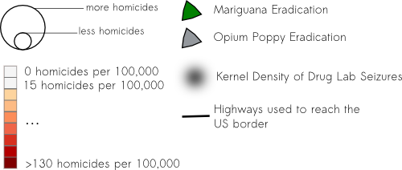

DRUG WAR IN MEXICO
Select a circle on the map or use the draw any shape button to display the homicide data from that area in the above chart
Type of homicide:
Drug War Homicides are only available from Dec 2006 to Sep 2011
Date range to show on map:
| 2004 | 2005 | 2006 | 2007 | 2008 | 2009 | 2010 | 2011 |
Drug cultivation and trafficking routes:

At this zoom level only places with more than 20 homicides are shown
Total homicides in 2011 have been adjusted by about 3% to account for the cutoff date for registering them
Visit my blog for more details
| Year | Drug War Homicides |
Annual Rate |
Total Homicides |
Annual Rate |
|---|---|---|---|---|
| 2004 | ||||
| 2005 | ||||
| 2006 | ||||
| 2007 | ||||
| 2008 | ||||
| 2009 | ||||
| 2010 | ||||
| 2011 |
For comparison, New Orleans has the highest U.S. metro homicide rate at 24